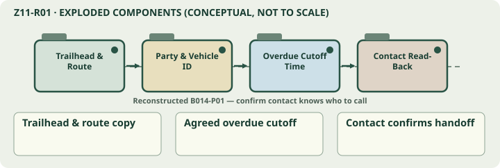

Z11-R01 · Navigation, weather and rescue · Reconstruction draft
Write a route plan and overdue handoff before departure
Give a trusted contact verifiable route, party and overdue-reporting details before entering backcountry terrain.
Lineage · B014 reconstruction · r01 slot R01 (original B014-P01 missing)
When it applies · Planned day or overnight outings outside dependable cell coverage; reconstructs missing historical B014-P01.
Equipment · Written or digital trip plan, trailhead map, vehicle description and confirmed emergency contact.

Actions
- Record exact trailhead name, planned route, alternate bailouts, party size, names, vehicle license/location and expected return time.[E01, T06, T11]
- Share the plan with a reliable off-trip contact and confirm aloud both the overdue cutoff time and which local sheriff or park dispatch they should notify.[E01, T11, ED]
- Carry a waterproof copy in your pack and check in promptly upon return so false searches are never triggered.[E01, T11, ED]
Failure recognition · Texting a vague message like "going hiking up north" with no trailhead, return window or confirmed contact acknowledgment.[E01, T06]
Verify · Ask your emergency contact to read back the trailhead, planned return time and exact overdue escalation trigger before departure.[E01, T11, ED]
Stop or change course · If no reliable contact can act on an overdue plan, choose a shorter, lower-risk route with dependable communications or postpone.[E01, T11, ED]
Evidence and editorial notes
- E01 · Minnesota DNR · Safety in State Forests (current web edition)
- Section: Before your trip and while visiting · Conditions: State-forest travel and backcountry planning
Support: Know the route, check conditions, carry navigation and safety equipment and share trip details.
Limitations: Conditions and trail maintenance vary seasonally across forest units. · Conflicting evidence: None; aligns with NPS-H.
Editorial note: Foundation for trip planning and pre-departure risk checks. · Specialist reviewer: Land management and search and rescue
Primary source · checked 2026-11-24 - T06 · NPS · Outdoor Emergency Plan (current web edition)
- Section: If you get lost or hurt; call for help · Conditions: Outdoor US emergency
Support: Communicate location, last known point, situation and needs. Stay put when unable to establish a safe route unless immediate danger requires movement.
Limitations: Cell signal is unreliable in backcountry terrain; pre-trip plans bridge communication gaps. · Conflicting evidence: None; core lost-person decision rule.
Editorial note: Foundation for stay/signal/move and dispatch handoff cards. · Specialist reviewer: Search and rescue
Primary source · checked 2026-11-24 - T11 · FEMA / Ready.gov · Make a Plan (current web edition)
- Section: Make a Plan > Family Emergency Communication Plan · Conditions: Households and traveling groups preparing for disruptions
Support: Record out-of-area contacts, local meeting places, medical/allergy summaries, and alternate communication channels (text vs voice) in paper and offline formats; practice the plan periodically.
Limitations: Cellular networks often congest during disasters while SMS or out-of-area contacts may still connect. · Conflicting evidence: None; complements outdoor trip-plan cards.
Editorial note: Anchors emergency communication protocols and group contingency plans. · Specialist reviewer: Emergency management and communications
Primary source · checked 2026-11-24
Source lineage · B014 reconstruction · r01 slot R01 (original B014-P01 missing) · Classification · Reconstruction draft.